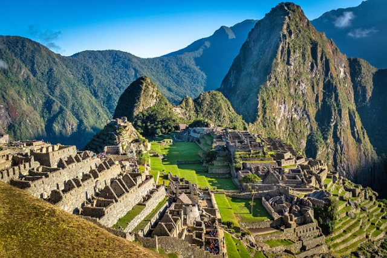
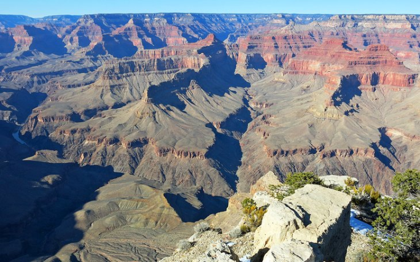
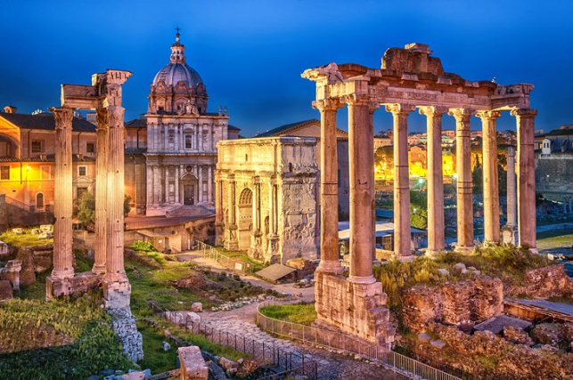
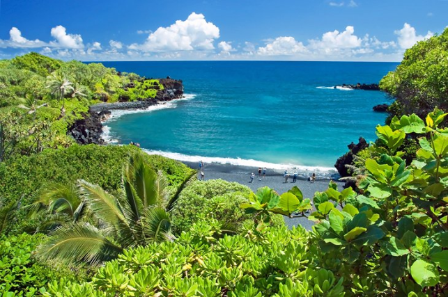
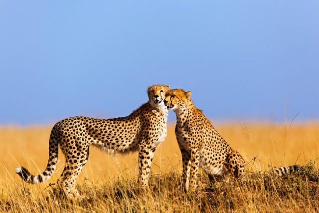

It can be tough to construct a list of the finest travel destinations
because the world is packed with such a range of wonderful and beautiful
places to visit. Considering a tourist who, for whatever reason, has
never left his or her hometown, what would be the first sites he or she
would visit? The list of the top places to visit in the globe must
include large cities such as New York, Paris, London, etc., each of
which contains a myriad of distinct attractions or must-see
destinations. The list also contains particular places, monuments, and
locales, each of which merits a visit in its own right. We recognize
that things are tough for travellers. We cannot travel to the
destinations on our bucket list at this time, but we can begin planning
for them. This list is a fantastic starting point for determining where
to travel if travel restrictions are lifted. Continue reading to learn
about some of the most famous tourist spots in the globe.
1. Machu Picchu, Peru

Machu Picchu was further excavated in 1915 by Bingham, in 1934 by the
Peruvian archaeologist Luis E. Valcarcel, and in 1940–41 by Paul
Fejos.
Additional discoveries throughout the Cordillera de Vilcabamba have
shown that Machu Picchu was one of a series of pucaras (fortified
sites),
tambos (travelers’ barracks, or inns), and signal towers along
the extensive Inca foot highway.
The dwellings at Machu Picchu were probably built and occupied from
the
mid-15th to the early or mid-16th century. Machu Picchu’s
construction
style and other evidence suggest that it was a palace complex of the
ruler Pachacuti Inca Yupanqui (reigned c. 1438–71). Several dozen
skeletons were excavated there in 1912, and, because most of those
were
initially identified as female, Bingham suggested that Machu Picchu
was
a sanctuary for the Virgins of the Sun (the Chosen Women), an elite
Inca
group. Technology at the turn of the 21st-century, however, identified
a
significant proportion of males and a great diversity in physical
types.
Both skeletal and material remains now suggest to scholars that Machu
Picchu served as a royal retreat. The reason for the site’s
abandonment
is also unknown, but lack of water may have been a factor.
The journey to Machu Picchu typically starts in
the mountain city of
Cusco,
which was the capital city of the Inca Empire. Cusco is a
fascinating place to explore-be sure to spend a few days there before
or
after your Machu Picchu adventure. It's possible to hike the Inca
Trail
from Cusco to Machu Picchu. The full hike takes five days, but you
can
also start closer and do a one-, two- or three-day hike along the
trail.
Most people take the train from Cusco, which takes about three and a
half hours.
2. The Grand Canyon, Arizona

This incredible sight, one of the
seven natural wonders of the world,
is
in the U.S. state of Arizona. It's one of those beautiful places for
which photos or video just don't do it justice-its sheer size and
scope
is hard to comprehend.
With geology formed over the past two billion years, yes billion, the
277 mile-long canyon itself is believed to have been started around
five
to six million years ago. It was formed by the flow of the Colorado
River, which still flows through it and continues to erode the
geology
along its course. The Grand Canyon is up to 18 miles wide in places
and
up to a mile deep. Imagine standing on the edge, looking down a sheer
rock wall almost a mile to the river below.
Most visitors come to the area referred to as the South Rim. This is
where a number of
impressive hiking trails into the Grand Canyon
begin
and great overlooks are spread along the rim road, known as Desert
View
Drive. A range of accommodations are available here and nearby, from
tents to a rustic luxury canyon-side resort built from logs. A few
accommodations are also found on the remote North Rim.
Many visitors access the canyon via the historic Grand Canyon
Railway,
which runs from the town of Williams, Arizona. The 64-mile rail line
provides an entertaining way to get to the canyon with food and live
music onboard. For those who prefer to drive, see our articles on
driving north from Phoenix to the Grand Canyon or driving from Las
Vegas
to the Grand Canyon.
3. Rome, Italy

The Eternal City is more like a giant, living museum. Visitors are
immersed in and surrounded by thousands of years of history. It's a
relatively compact city, and a three-day itinerary gets you to the
minimum number of must-see places.
These must-see sites for any visitor include the
Colosseum
and adjacent
Roman Forum;
the
Pantheon;
and
Vatican City,
a separate country in the
middle of central Rome.
Take some time to explore the outskirts of Rome, too. Consider a hike
along a tomb-lined section of the Appian Way, the ancient Roman
superhighway, and a visit to one of the aqueduct ruins outside the
city.
If you feel like hitting the beach after all your exploring, Rome has
a
wonderful assortment of beach towns
just a short drive away on the Lazio
Coast. Escape the heat, hustle, and bustle of the city to bathe in
the
cool waters of the Tyrrhenian Sea.
4. Maui, Hawaii

This Hawaiian island offers a wide range of experiences for visitors.
You can surf, enjoy a meal on the beach at a five-star luxury resort
in
Wailea, ride a horse across a dormant volcano in Haleakala National
Park, or hike through a rainforest in the West Maui Mountains. The
natural scenery is amazing-it's truly one of the most beautiful
islands
in the world. When it comes to accommodation, there is something for
everyone here, from rustic hippie bungalow bed and breakfasts to
five-star luxury resort hotels. Wailea has all the luxury
resorts-it's
like the beachfront Beverly Hills of Maui. If you're staying here, be
sure to venture out and spend some time in Kihei, where the locals
hang
out.
5. Masai Mara, Kenya

Kenya's Masai Mara is an incredible bio-diverse area and a popular
safari destination. It's an opportunity to see the "big five" animals
(lion, leopard, rhinoceros, elephant, and Cape buffalo) all during
one
trip or, if you're lucky, during one afternoon.
The protected Masai Mara National Reserve park area is huge, over
1,500
square kilometers of mainly grassland, extending all the way to the
Serengeti plain of Tanzania. The popular times to visit are during
the
twice-yearly migrations, the main one being in July and August. Over
a
million wildebeest and other animals cross the area in huge groups to
go
from one feeding area to another. Most visitors fly into
Nairobi,
then
take a small bush plane to the Mara.